<div id="app-container">
  <mat-toolbar id="toolbar" color="black">
    
    <span style="width: 1em;" class="home" (click)="goToStart()"></span>
    <span style="font-weight: bold;" class="home" (click)="goToStart()">Cluster Manager</span>
    <span style="width: 1em;"></span>

    <a class="nav" mat-button matTooltip="Documentation" routerLink="help/">HELP</a>
    <a class="nav" mat-button matTooltip="Preferences" routerLink="settings/">SETTINGS</a>
    <span style="flex: 1 1 auto;"></span>
    <a *ngIf="router.url.includes('overview') || router.url.includes('visualization') || router.url.includes('drilldown')" style="border-radius: 20px;" mat-flat-button color="primary" (click)="restart_or_save()">{{router.url === '/' ? 'NEW CLUSTERING' : 'SAVE AND FINISH'}}<span class="material-icons">keyboard_arrow_right</span></a>

  </mat-toolbar>

  <mat-sidenav-container class="container" hasBackdrop="false">
    <mat-sidenav #sidenav mode="over" opened position="end">
      <div id="sidebar">
        <div id="sidebar-content">
          <h2>{{sservice.getTitle()}}</h2>
          <p class="sidenav-value subtitle">{{sservice.getSubtitle()}}</p>
          <div *ngFor="let item of sservice.getContentList()" [innerHTML]="item.format()">
            
          </div>
          <a *ngIf="sservice.hasNext()" autofocus="false" style="border-radius: 20px;" mat-flat-button color="primary" id="next" (click)="sservice.navigate()"><span class='material-icons'>keyboard_arrow_right</span> {{sservice.getNext()}}</a>
        </div>
      </div>
    </mat-sidenav>
    <mat-sidenav-content>
      <router-outlet></router-outlet>
    </mat-sidenav-content>

  </mat-sidenav-container>
  
</div>